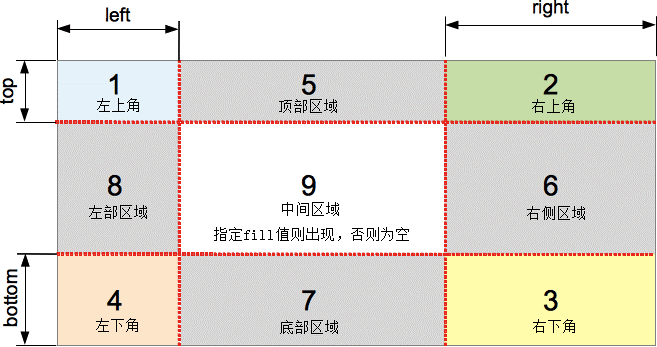

border-image
https://developer.mozilla.org/zh-CN/docs/Web/CSS/border-imageborder-image-source
属性使用图像来替换默认的边框样式，可以是图片和渐变
如果 border-image-source 的计算值为 none，或图像无法显示，则将显示 border-style。
border-image-slice
理解关键点，对应四个值，就是会用四条线把切割图片，用作border，四条线会把图片给切割成9个区域
border-image-width
边框图像的宽度。最多可以指定四个值
border-image-outset
偏移量 边框图像到元素外部边缘的距离。最多可以指定四个值
border-image-repeat
定义源图像边缘区域适配边框图像尺寸的方式。最多可以指定两个值